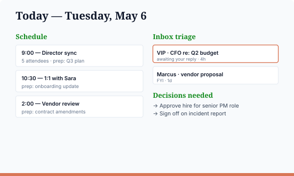

📅 Personal Secretary
What you'll build
A "Today" page that pulls your calendar, recent unread email, and Teams mentions from Microsoft 365, then writes a single HTML page with prep notes for each meeting, an inbox triage section, decisions you owe people, and loose ends. Run it in the morning; refresh as the day shifts.

What you'll need
- Claude Code installed
- The Microsoft 365 connector authenticated in Claude (Outlook + Teams + Calendar scopes)
- A short
priorities.mdfile naming VIPs and which folders matter to you
Step 1 — Ask Claude to build your slash command
Open Claude Code in any folder. Paste this prompt, swap your specifics into the [FILL IN: ...] placeholders, and hit enter. Claude will write the slash command file at ~/.claude/commands/secretary.md for you.
Create a Claude Code slash command at ~/.claude/commands/secretary.md. The /secretary command should pull from my Microsoft 365 (today's calendar, unread email from the last 24h, and Teams mentions/DMs) and write site/index.html with these sections: Schedule (chronological with a prep note per meeting), Inbox triage (VIPs first), Decisions needed (questions awaiting my reply), Loose ends (commitments I made but haven't closed). It should read priorities.md from the current directory, creating a starter if missing. For my starter priorities.md, use: My VIPs (their messages always rise to the top): - [FILL IN: e.g., "Jane Smith — CFO", "Marcus Lee — chief of staff"] Folders or labels that matter most: - [FILL IN: e.g., "Direct Reports", "Vendor Negotiations", "Board Updates"] What "high priority" means in my role: - [FILL IN: e.g., "anything from execs, urgent flags, mentions of my team's roadmap"] Write proper YAML frontmatter and a clear prompt body that uses the M365 connector correctly.
What the generated file should look like
Claude should write something close to this at ~/.claude/commands/secretary.md:
---
description: Build a "Today" page from M365 calendar, email, and Teams
---
You are building a daily summary HTML page for a director who wants to walk
into the day with a clear plan.
INPUTS
- priorities.md (in cwd) — VIPs, folders, what counts as "high priority"
- Microsoft 365 connector — calendar (today), unread email (last 24h),
Teams mentions (last 24h)
WHAT TO DO
1. Read priorities.md. If missing, create a starter and ask the user to edit.
2. Fetch today's calendar events (start/end, attendees, subject, body).
3. Fetch unread email — group by sender, flag VIPs.
4. Fetch Teams @mentions and DMs.
5. For each calendar event, look at email/teams threads with the same
attendees and summarize "what's relevant for prep."
6. Write site/index.html with sections:
- Schedule (chronological, with prep notes per meeting)
- Inbox triage (flagged emails to read/respond to)
- Decisions needed (questions awaiting your answer)
- Loose ends (commitments you made but haven't closed out)
OUTPUT
- site/index.html
- site/styles.css (one-time)
- A short summary in chat.Reference copy lives at recipes/secretary.md.
Step 2 — Run it
> /secretary
✓ Read priorities.md
✓ Fetched 6 calendar events
✓ Fetched 23 unread emails (4 from VIPs)
✓ Fetched 11 Teams mentions
✓ Wrote site/index.html
✓ 3 decisions awaiting your replyStep 3 — See it
> open site/index.htmlCustomize
- Time window. "Today" defaults to your work hours; widen or narrow in
priorities.md. - VIPs. Listed names always rise to the top of inbox triage.
- Sections. Drop or reorder the four sections by editing the slash command body.
Why directors care
Skip the morning email shuffle. Walk into your first meeting already knowing what each attendee has been writing about and what you owe them.